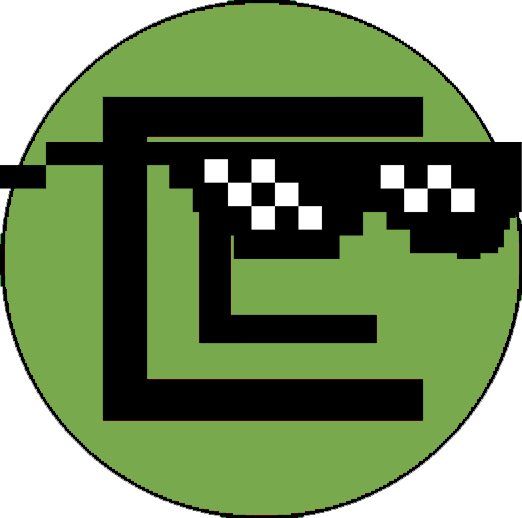

<mat-toolbar color="primary">
  <div class="main header">
    <span class="title" routerLink="/home">
      <div>
        
        <h1>Concastor Reviews</h1>
      </div>
    </span>
    <div style="padding-top: 5px">
      <button mat-button routerLink="/all">All Reviews</button>
      <button mat-button routerLink="/about">About me</button>

      <button *ngIf="showCreate()" mat-button routerLink="/create">
        Create
      </button>

      <ng-container *ngIf="user; else elseTemplate">
        <button mat-raised-button color="accent">
          <mat-icon>account_circle</mat-icon>
          logged in as {{ user.email }}
        </button>
      </ng-container>
      <ng-template #elseTemplate>
        <button mat-raised-button color="accent" (click)="openDialog()">
          <mat-icon>account_circle</mat-icon>
          Log In/Sign Up
        </button>
      </ng-template>
    </div>
  </div>
</mat-toolbar>
